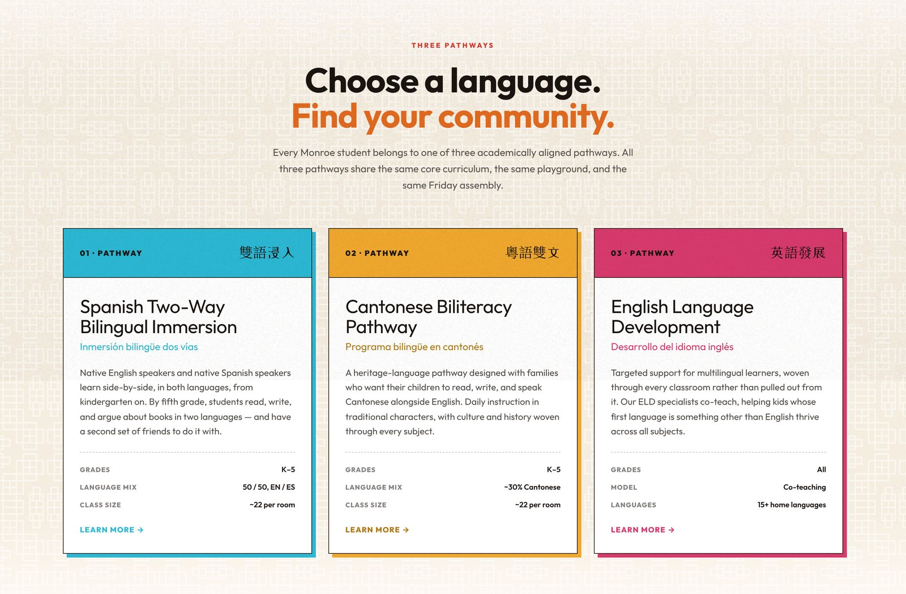
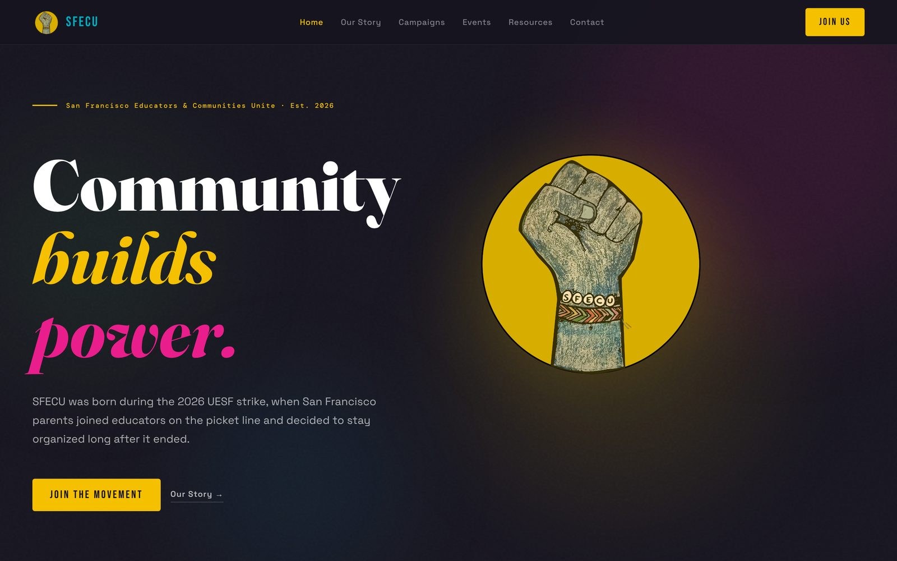

I have a BS in Communication Design from the University of Cincinnati and have done web, print, and campaign design since 2010. These days most of my design work is for my kids’ school and the groups I organize with. Good design there isn’t about looking polished. It decides who can read a flyer, follow a meeting, or find the help they need.
Selected work · 2024–2026
01Web · Trilingual
Monroe Elementary
A public school website where English, Spanish, and Chinese share one front door.
View project →
Web · Identity
SFECU
Identity and site for a parent coalition born on the 2026 picket line.
View project →
Interactive · Personal
Raised on the answer key
A child development midterm built as a playable mixtape.
View project →
Print · Multilingual
Family meeting toolkit
Eight printable tools for school meetings in three languages.
View project →
Identity
This site
The leaf mark, palette, and type behind this website.
View project →